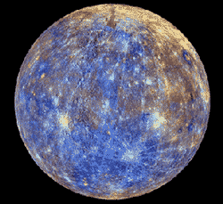
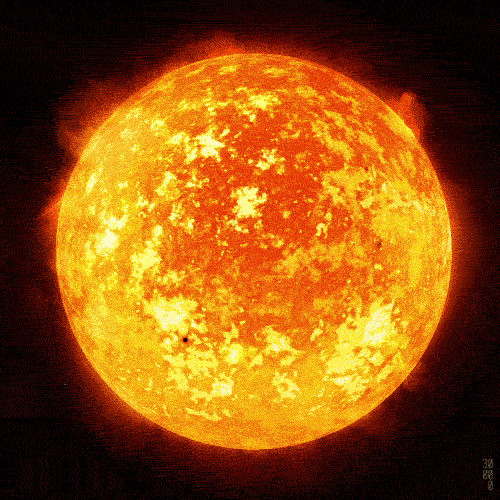

O planeta Terra é o planeta habitado por nós, seres vivos. Conhecido também como planeta água, é o maior dentre os quatro planetas rochosos que fazem parte do Sistema Solar. O Planeta Terra é conhecido como Planeta Azul.

Mercúrio é o menor e mais interno planeta do Sistema Solar, orbitando o Sol a cada 87,969 dias terrestres. A sua órbita tem a maior excentricidade e o seu eixo apresenta a menor inclinação em relação ao plano da órbita dentre todos os planetas do Sistema Solar.
O Sol é uma estrela anã amarela que os demais corpos celestes do Sistema Solar orbitam. Ele é formado por gases e não dispõe de nenhuma superfície sólida. O Sol é uma estrela localizada na Via Láctea. Trata-se da estrela mais próxima do planeta Terra e a maior de todo o Sistema Solar.
- Mercúrio
- Vênus
- Terra
- Marte
- Júpiter
- Saturno
- Urano
- Netuno